용접기사 (2007-03-04 기출문제)
1과목: 기계제작법
1. 로스트 왁스 주형법(Lost wax process) 이라고도 하며, 제작하려는 제품과 동형의 모형을 양초 또는 합성수지로 만들고, 이 모형의 둘레에 유동성이 있는 조형재를 흘려서 모형은 그 속에 매 몰한 다음 건조가열로 주형을 굳히고, 양초나 합성 수지는 용해 시켜 주형 밖으로 흘려 배출하 여 주형을 완성하는 방법은?
- 다이캐스트법
- 셀 몰드법
- 인베스트먼트법
- 진공 주조법
(정답률: 80%)

2. 원통내면의 정밀 다듬질의 일종이고 혼(hone)이라 부르는 각봉상 세입자로 만든 공구를 회전과 왕복운동을 시켜 공작물의 원통내면을 유압 또는 스프링으로 압력을 주어 가공하는 가공법은?
- 호닝
- 슈퍼피니싱
- 래핑
- 방전가공
(정답률: 84%)
3. 단조품이나 주조품에서 표면이 울퉁불퉁하여 볼트나 너트의 체결이 잘 되도록 하기 위하여 볼트나 너트가 닿는 구멍 주위의 부분만을 평탄하게 가공하는 것은?
- 카운트 싱킹(counter sinking)
- 카운터링(countering)
- 스폿 페이싱(spot facing)
- 보링(boring)
(정답률: 알수없음)
4. 용량이 5ton인 단조 프레스로 단조물의 유효 단면적이 500mm2인 재료를 단조하여 한다. 이 때 프레스의 효율이 80%라면 단조재료의 변형저항은?
- 4 kgf/mm2
- 8 kgf/mm2
- 10 kgf/mm2
- 16 kgf/mm2
(정답률: 84%)
5. 최소 측정값이 1/20mm인 버니어캘리퍼스에 대한 설명으로 옳은 것은?
- 본척의 최소 눈금이 1mm, 부착의 1눈금은 12mm를 25등분한 것
- 본척의 최소 눈금이 1mm, 부착의 1눈금은 19mm를 20등분한 것
- 본척의 최소 눈금이 0.5mm, 부착의 1눈금은 19mm를 25등분한 것
- 본척의 최소 눈금이 0.5mm, 부착의 1눈금은 24mm를 20등분한 것
(정답률: 84%)
6. 원통 연삭작업에서 연삭 숫돌의 원주속도 v=1800m/min, 연삭력 15kgf, 연삭효율이 η=80%일 때 연삭 동력은?
- 3.5PS
- 5.5PS
- 7.5PS
- 9.5PS
(정답률: 73%)
7. 코어 프린트를 설치하는 목적 중 가장 적합한 사항은?
- 주물의 가스 배출을 하기 위함이다.
- 주형 내부에서 금속 수축분에 대한 부족을 보충하기 위함이다.
- 코어를 주형내부에서 지지할 수 있도록 하기 위함이다.
- 목형을 튼튼하게 보강하기 위함이다.
(정답률: 82%)
8. 일반적으로 밀링머신에서 할 수 없는 작업은?
- 더브테일(dovetail)가공
- 드릴링(drilling)
- 절단가공(cutting)
- 널링(knurling)
(정답률: 알수없음)
9. 덧 쇳물(riser)의 역할로서 가장 적합하지 않는 것은?
- 주로 균열이 생긱는 것을 방지한다.
- 주형 내의 불순물과 용제의 일부를 밖으로 배출한다.
- 주형 내의 쇳물에 압력을 주어 조직이 치밀해진다.
- 금속이 응고할 때 수축으로 인한 쇳물 부족을 보충한다.
(정답률: 40%)
10. 자유 단조의 기본작업 방법에 해당 되지 않는 것은?
- 늘리기(drawing)
- 업세팅(up-setting)
- 굽히기(bending)
- 스피닝(spinning)
(정답률: 82%)
11. 연삭 숫돌의 눈메움(loading)의 원인에 대해서 설명한 것 중 틀린 것은?
- 연삭 숫돌 입도가 너무 적거나 깊이가 클 경우
- 숫돌의 조직이 너무 치밀한 경우
- 연한 금속을 연삭할 경우
- 숫돌의 원주속도가 너무 클 경우
(정답률: 20%)
12. 공구수명을 판정하는 것 중 틀린 것은?
- 가공면에 광택이 있는 색조 또는 반점이 생길 때
- 절삭저항의 주분력에는 변화가 적어도 배분력이나 이송항향 분력이 급격히 증가할 때
- 완성가공된 치수의 변화가 일정량에 미달할 때
- 공구 인선의 마모가 일정량에 달했을 때
(정답률: 알수없음)
13. 이미 가공되어 있는 구멍에 다소 큰 볼을 압입하여 통과시켜서 가공물의 표면을 소성 변형시켜 정밀도가 높은 면을 얻는 가공법은?
- 버니싱(burnishing)
- 숏 피닝(shot peening)
- 배럴 다듬질(barrel finishing)
- 버핑(buffing)
(정답률: 62%)
14. 강을 경화 또는 강도를 증가시키기 위해서 변태점 이상의 적당한 온도로 가열한 후 매제 중에서 급속 냉각시키는 열처리 조작은?
- 풀림
- 불림
- 담금질
- 뜨임
(정답률: 73%)
15. 2차원 절삭모델에서 절삭깊이를 t1, 칩 두께를 t2 라고 할 때 절삭비 rc는 어느 것인가?
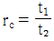
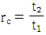
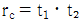
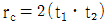
(정답률: 31%)
16. 다음 중 비교 측정기는?
- 금속재 곧은자
- 마이크로미터
- 게이지블록
- 버니어캘리퍼스
(정답률: 58%)
17. MIG 용접은 일반적으로 무슨 극정을 사용하는가?
- 교류 정극성
- 직류 정극성
- 교류 역극성
- 직류 역극성
(정답률: 82%)
18. 센터리스 연삭의 특성 설명을 틀린 것은?
- 연삭에 숙련이 필요로 한다.
- 중공(中空)의 가공물을 연삭할 때 편리하다.
- 가늘고 긴 가공물의 연삭에 적합하다.
- 연삭 숫돌의 폭이 크므로 숫돌지름의 마멸이 적고, 수명이 길다.
(정답률: 64%)
19. 일반적으로 보통 선반의 크기를 표시하는 방법이 아닌 것은?
- 스핀들의 회전속도
- 주축대와 심압대 양센터간 최대거리
- 왕복대위의 스윙
- 베드위의 스윙
(정답률: 69%)
20. 용접 결함의 검사 방법 중 파괴검사에 속하는 것은?
- 방사선검사
- 초음파검사
- 자분검사
- 피로검사
(정답률: 90%)
2과목: 재료역학
21. 다음 그림과 같이 반지름이 a인 원형단면의 원주에 접하는 축(x')에 대한 단면 2차 모멘트는?
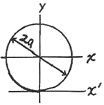
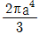
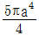
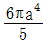
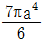
(정답률: 80%)
22. 중공 축의 내부 직경이 40 mm, 외부 직경이 60 mm 일 때, 최대 전단응력이 120 MPa를 초과하지 않도록 적용할 수 있는 최대 비틀림 모멘트는 몇 KNㆍm인가?
- 1.02
- 2.04
- 3.06
- 4.08
(정답률: 알수없음)
23. 다음 그림에서 임의의 θ 단면에서 굽힘모멘트의 크기는?
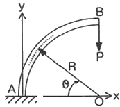
- PR(1-cosθ)
- PRcosθ
- PR(1-sinθ)
- PRsinθ
(정답률: 55%)
24. 직경이 1.5m, 두께가 3mm인 원통형 강재 용기의 최대 사용강도가 240 MPa일 때 지탱할 수 있는 한계압력은 몇 KPa 인가? (단, 안전계수는 2이다.)
- 240
- 480
- 720
- 960
(정답률: 37%)
25. 알루미늄의 탄성계수는 약 7 GPa이다. 길이 20cm, 단면적 10cm2인 봉을 축력을 받는 스프링으로 사용하려 할 때, 스프링 상수는 몇 MN/m 인가?
- 3.5
- 35
- 7
- 70
(정답률: 73%)
26. 그림과 같은 균일분포하중 ω KN/m 를 받는 단순보에서 중앙점의 처짐을 0으로 하고자 할 때, 아래에서 위로 받쳐 주어야 하는 힘 P는?
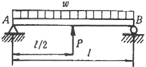
- P = ωℓ
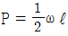
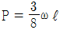
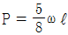
(정답률: 64%)
27. 2축 응력상태에서 σx = σy = 140 MPa 이고 재료의 전단탄성계수 G = 84GPa 이면 전단 변형률 ϒ는?
- 0.87×10-3
- 1.23×10-3
- 1.67×10-3
- 1.89×10-3
(정답률: 67%)
28. 탄성계수가 E1, E2인 두 부재 ①,②가 그림과 같이 합성된 구조물로 압축하중 P를 받고 있다. ①, ②에 발생되는 응력의 비는?
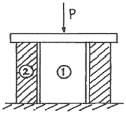
- σ1/σ2 = E2/E1
- σ1/σ2 = E1/E2
- σ1/σ2 = E2/(E1+E2)
- σ1/σ2 = E1/(E1+E2)
(정답률: 19%)
29. 그림과 같이 정삼각형 형태의 트러스가 길이 150cm인 2개의 봉으로 조립되어 절점 B에서 수직 하중 P=15000N을 받고 있다. 이 두 봉은 같은 단면적과 같은 재료를 사용하였다면 B점의 수직 변위 δv는? (단, 탄성계수 E=210 GPa, 단면적 A=1.56cm2이다.)
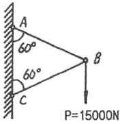
- 0.00137mm
- 0.137mm
- 0.0137mm
- 1.37mm
(정답률: 알수없음)
30. 높이 h, 폭 b인 직사각형 단면을 가진 보와 높이 b, 폭 h인 단면을 가진 보의 단면 2차 모멘트의 비는? (단, h=1.5b)
- 1.5 : 1
- 2.25 : 1
- 3.375 : 1
- 5.06 : 1
(정답률: 58%)
31. 그림과 같은 형태로 분포하중을 받고 있는 단순지지보가 있다. 지지점 A에서의 반력 RA는 인가?(단, 분포하중
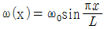
)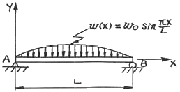
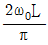
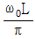
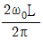
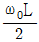
(정답률: 50%)
32. 재료가 동일한 길이 L, 지름 d인 축과 같이 2L, 지름 2d인 축을 동일각도 만큼 변위시키는데 필요한 비틀림 모멘트의 비 T1/T2 의 값은 얼마인가?
- 1/4
- 1/8
- 1/16
- 1/32
(정답률: 알수없음)
33. 평면응력 상태에서 σx = 300MPa, σy = -900MPa, τxy = 450MPa일 때 최대 주응력은 몇 MPa인가?
- 1150
- 300
- 450
- 750
(정답률: 73%)
34. 그림에 표시된 사각형 단면의 짧은 기둥에서 θ=2mm 되는 곳에 100 KN의 압축 하중이 작용 할 때 발생되는 최대응력은?
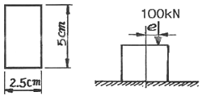
- 39.6 MPa
- 56.2 MPa
- 83.7 MPa
- 118.4 MPa
(정답률: 알수없음)
35. 그림과 같은 직사각형 단면을 갖는 단순지지보에 3 KN/m의 균일 분포하중과 축방향으로 50KN의 인장력이 작용할 때 최대 및 최소 응력은?
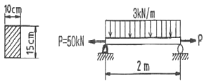
- 4 MPa 인장, 3.33 MPa 압축
- 4 MPa 압축, 3.33 MPa 인장
- 7.33 MPa 인장, 0.67 MPa 압축
- 7.33 MPa 압축, 0.67 MPa 인장
(정답률: 알수없음)
36. 안지름이 25mm, 바깥 지름이 30mm인 중공 강철관에 10KN의 축인장 하중을 가할 때 인장응력은 몇 MPa인가?
- 14.2
- 20.3
- 46.3
- 145.5
(정답률: 48%)
37. 부재의 양단이 자유롭게 회전할 수 있도록 부하되고, 길이가 4m이고 단면이 직사각형(100mm×50mm)인 압축 부재의 좌굴 하중을 오일러 공식으로 구하면 몇 KN인가? (단, 탄성계수 E=100GPa이다.)
- 52.4 KN
- 64.4 KN
- 72.4 KN
- 84.4 KN
(정답률: 알수없음)
38. 평면 응력상태에서 σx = 100MPa, σy = 50MPa 일 때 x방향과 y방향의 변형률 εx, εy 는 얼마인가? (단, 이 재료의 탄성계수 E=210 GPa, 포와송 비 μ=0.3이다.)
- εx = 202×10-6, εy = 46×10-6
- εx = 404×10-6, εy = 95×10-6
- εx = 404×10-6, εy = 404×10-6
- εx = 808×10-6, εy = 190×10-6
(정답률: 54%)
39. 단면[폭×높이]이 4cm×6cmn이고 길이가 2m인 단순보의 중앙에 집중하중이 작용할 때 최대처짐이 0.5cm라면 집중 하중은 몇 N인가? (단, 탄성계수 E=200 GPa 이다.)
- 5520
- 3300
- 2530
- 4320
(정답률: 알수없음)
40. 축 방향의 단면에 균일한 인장응력 10MPa 이 작용하고 있다면 이 때 체적 변형률 εv는? (단, 포와송의 비 μ=0.3, 탄성계수 E=210 GPa이다.)
- 1.6×10-5
- 1.7×10-5
- 1.8×10-5
- 1.9×10-5
(정답률: 알수없음)
3과목: 용접야금
41. 모재의 열영향부가 경화할 때 비드의 끝단에 일어나기 쉬운 용접결함은?
- 비드 밑 균열(under bead crack)
- 토우균열(toe crack)
- 은점(fish eye)
- 기공(blow hole)
(정답률: 90%)
42. 다음 용접 재료 중 예열의 필요성이 가장 적은 것은?
- 상온에서 두께 약 25mm이상의 강인강(强靭鋼)의 용접
- 상온에서 두께 12mm의 연강판 용접
- 상온에서 후판 알루미늄합금, 동 또는 동합금 용접
- 0℃이하에서의 연강판 용접
(정답률: 30%)
43. 용착금속의 비금속 개재물에 대한 설명으로 틀린 것은?
- 용착금속에서는 대부분 산화물이다.
- 아크 길이가 길고 위빙폭이 클 경우 양이 많아진다.
- 아크 길이가 짧고 위빙폭이 적을 경우 양이 많아진다.
- 비금속 개재물의 분포가 편재하면 선상조직 등의 원인이 된다.
(정답률: 60%)
44. 포정반응(peritectic reaction)을 나타내는 합금은?
- Fe-C
- Ag-Cr
- Pb-Zn
- Ag-Ni
(정답률: 70%)
45. 슬래그를 구성하는 산화물은 염기성, 중성 및 산성의 3종류로 분류된다. 다음 중 염기성 산화물에 속하지 않는 것은?
- MgO
- FeO
- MnO
- SiO2
(정답률: 알수없음)
46. 강괴(鋼塊)가 응고할 때 최초에 응고하는 부분과 나중에 응고하는 부분의 화학성분이 달라지는 현상은?
- 포정
- 포석
- 편석
- 편정
(정답률: 84%)
47. 용착금속내에 유황편석에 의한 설퍼크랙을 방지하기 위한 가장 적당한 방법은?
- 용착 금속 내에 수소가 흡수되지 않도록 한다.
- 용접 모재로 림드강 강판을 사용한다.
- 자동 용접을 실시한다.
- 수동 용접을 실시한다.
(정답률: 59%)
48. 강을 열처리할 때 어떤 온도에서 냉각을 정지하고 그 온도에서 변태를 시켜 변태 개시온도와 변태 완료온도를 온도-시간 곡선으로 나타내는 것을 무엇이라 하는가?
- 항온변태곡선
- 항온뜨임곡선
- 항온풀림곡선
- 항온불림곡선
(정답률: 92%)
49. 용접에서 각종 원소의 탈산력을 비교할 때, 탈산력이 가장 낮은 것은?
- Al
- Ti
- Si
- Ni
(정답률: 46%)
50. 강의 열영향부 조직에 대한 설명 중 맞는 것은?
- 조립역은 약 900℃이상의 조대화한 부분으로 가열을 받은 부위이다.
- 세립역은 약 900~1100℃ 재결정으로 미세화한 부분으로 취화 되어 있다.
- 취화역은 열응력으로 취화되는 경우가 있고, 현미경 조직으로 변화가 없다.
- 모재 원질부는 약 200~500℃의 열을 받은 부위이다.
(정답률: 알수없음)
51. 노멀라이징(Normalizing)처리 목적이 아닌 것은?
- 조직은 미세화
- 취성의 향상
- 가공성의 향상
- 강의 표준화
(정답률: 90%)
52. 다음 중 면심입방격자 구조(FCC)인 것은?
- α-Cr
- α-Fe
- ϒ-Fe
- β-Cr
(정답률: 80%)
53. 가스 용접에서 용제를 사용하지 않아도 되는 것은?
- 알루미늄
- 구리합금
- 주철
- 연강
(정답률: 50%)
54. 용접 열영향을 받아도 경화하지 않으나 용접부근에서 가열된 영역은 현저하게 결정이 조대화 하고 이 때문에 연성, 인성이 떨어지는 스테인리스강은?
- 페라이트계 스테인리스강
- 오스테나이트계 스테인리스강
- 마텐사이트계 스테인리스강
- 펄라이트계 스테인리스강
(정답률: 37%)
55. 용접 재료기호 “SM45C"에서 숫자 45가 의미하는 것은?
- 인장강도
- 탄소함유량
- 항복점
- 연신율
(정답률: 80%)
56. 순철의 자기변태점은 어느 것인가?
- A1
- A2
- A3
- A4
(정답률: 82%)
57. 다음 중 파괴에 대한 설명으로 맞는 것은?
- 용접이음의 온도가 천이온도 보다 높을 때 취성파괴가 일어난다.
- 용접이음의 온도가 천이온도 보다 낮을 때 취성파괴가 일어난다.
- 취성파괴는 저온에서 발생되기 쉬우며 발생된 균열의 전파속도 최대값은 재질 내에서 전파하는 음속의 40%정도로 빠르게 전파된다.
- 취성파괴는 저온에서 발생되기 쉬우며 발생된 균열의 전파속도 최대값은 재질 내에서 전파하는 음속의 50%정도로 빠르게 전파된다.
(정답률: 알수없음)
58. 금속결정의 전위 형태가 아닌 것은?
- 인상전위
- 나선전위
- 굽힘전위
- 혼합전위
(정답률: 73%)
59. 금속의 조직에서 페라이트의 설명은?
- 체심입방격자의 α철에 탄소를 고용한 상(相)
- 6.67% C를 함유환 탄화철
- 철-탄화철계의 공정조직
- 면심입방격자에 탄소를 고용한 상(相)으로 정사방정
(정답률: 92%)
60. 입방정계(Cubic System)에 세분화된 결정 격자가 아닌 것은?
- 단순 입방 격자
- 육심 입방 격자
- 체심 입방 격자
- 면심 입방 격자
(정답률: 82%)
4과목: 용접구조설계
61. 다음 용접 결함 중 구조상 결함에 속하지 않는 결함은?
- 기공
- 형상불량
- 언더컷 불량
- 용입불량
(정답률: 82%)
62. 용접구조설계의 순서로 가장 적합한 것은?
- 기본계획→구조설계→강도계산→공작도면 작성→재료적산→사양서 작성
- 기본계획→강도계산→구조설계→공작도면 작성→재료적산→사양서 작성
- 기본계획→공작도면 작성→강도계산→구조설계→재료적산→사양서 작성
- 기본계획→구조설계→공작도면 작성→강도계산→재료적산→사양서 작성
(정답률: 75%)
63. 용접부의 피로 강도 향상법이 아닌 것은?
- 표면가공에 의하여 급격한 단면의 변화를 피한다.
- 가능한 응력집중부에는 용접 이음부를 두지 않는다.
- 용접부의 덧살을 가능한 크게 한다.
- 뒷면 용접으로 완전한 용입이 되도록 한다.
(정답률: 93%)
64. 구조용강의 용접균열 중 열 영향부에 많이 생기는 균열이 아닌 것은?
- 크레이터 균열
- 비드 밑 균열
- 토우 균열
- 루트 균열
(정답률: 92%)
65. 다음 중 용접 후 잔류 응력 제거 또는 완화 방법으로 틀린 것은?
- 노멀라이징(normalizing)법
- 응력제거 어닐링(annealing)법
- 저온응력 완화법
- 기계적응력 완화법
(정답률: 72%)
66. 용접 균열 시험법 중 고온 균열 시험법은?
- 슬릿형 균열 시험법
- 리하이 구속 균열 시험법
- H형 용접 균열 시험법
- 피스코 균열 시험법
(정답률: 74%)
67. 필릿용접에서 용접선의 교차를 피하기 위하여 반원형(부채꼴모양)으로 잘라내고 용접하는 것은?
- 백 치핑(back chipping)
- 스캘럽(scallop)
- 피닝(peening)
- 가스 가우징(gas gouging)
(정답률: 70%)
68. 용접이음이 짧다든지 변형 및 잔류 응력이 별로 문제가 되지 않을 때 사용되는 용착법은?
- 빌드업법
- 도열법
- 전진법
- 후진법
(정답률: 알수없음)
69. 다음 용접결함 중 기공을 알아 볼 수 없는 시험(검사)방법은?
- 부식시험
- 방사선검사
- 와류검사
- 초음파검사
(정답률: 84%)
70. 균열 시험에 사용하는 재료의 변형약식으로 다음과 같은 모드(Mode)가 있는데 여기에 속하지 않는 것은?
- 개구형(Opening Mode)
- 면내 전달형(Sliding Mode)
- 면외 전달형(Tearing Mode)
- 비틀림 전달형(Twisting Mode)
(정답률: 60%)
71. 용접 변형을 경감하기 위한 방법 중 틀린 것은?
- 모재에 수축을 예측하여 용접 전에 역변형을 준다.
- 변형에 대한 저항을 크게 하기 위해서 용착 금속을 많게 한다.
- 대칭법 또는 후퇴법으로 용접한다.
- 용접 직후 피닝한다.
(정답률: 93%)
72. 용접에서 비드 밑 균열의 원인이 아닌 것은?
- 550℃ 이상의 온도에서 발생
- 용착강 및 열영향부 수축
- 오스테나이트→마텐자이트 변태
- 아크 분위기 중의 수소를 다량함유
(정답률: 46%)
73. 그림과 같은 용접 이음에서 이음부에 걸리는 인장응력은? (단, P=45000 kgf, t=h=10mm, ℓ=400mm 이다.)
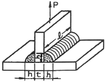
- 약 2.98 kgf/mm2
- 약 5.5 kgf/mm2
- 약 7.95 kgf/mm2
- 약 15.9 kgf/mm2
(정답률: 77%)
74. 다음 중 용접이음 효율(η)을 바르게 나타내는 것은?
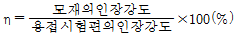
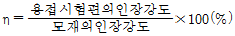
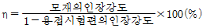
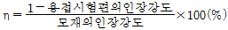
(정답률: 77%)
75. 용접부의 충격시험은 다음 중 어느 것을 알기 위한 시험인가?
- 인성
- 균열
- 전단
- 파단
(정답률: 40%)
76. 용접의 변형경감 및 교정에서, 역(逆)변형법을 올바르게 설명한 것은?
- 공작물을 가접 또는 지그 홀더 등으로 장착하고 변형의 발생을 억제하는 방법이다.
- 용접부 근처에 물끼 있는 석면, 천 등을 두고 모재에 용접입열을 막는 방법이다.
- 용접직후 피닝해머로 비드를 두드려서 용접금속의 변형을 방지하는 방법이다.
- 용접금속 및 모재의 수축에 대하여 용접전에 반대 방향으로 굽혀 놓고 작업하는 방법이다.
(정답률: 100%)
77. 필릿용접에서 각장의 길이가 6mm일 때 목두께는?
- 약 3.2mm
- 약 4.2mm
- 약 6.4mm
- 약 8.4mm
(정답률: 64%)
78. 용접수축변형에 대한 일반적인 대책으로 맞는 것은?
- 용접 입열을 높게 한다.
- 용접속도를 빠르게 한다.
- 비 대칭으로 용접한다.
- 용접 전 역변형은 가급적 피한다.
(정답률: 알수없음)
79. 강판의 두께 9mm, 폭 200mm를 단순 완전 맞대기 용접이음하여 축 인장하중 8000kgf를 용접선에 직각방향으로 작용시킬 때 발생하는 인장응력(kgf/mm2)은 얼마인가?
- 2.22
- 4.44
- 8.88
- 10.11
(정답률: 알수없음)
80. 납땜 용제의 구비조건으로 적합하지 않는 것은?
- 유동성이 좋을 것
- 도전성이 좋을 것
- 비중이 클 것
- 인체나 기구에 안전할 것
(정답률: 86%)
5과목: 용접일반 및 안전관리
81. 피복 아크 용접에서 피복제의 역할이 아닌 것은?
- 아크를 안정하게 한다.
- 용접금속에 합금성분 첨가작용을 한다.
- 융점이 높고, 무거운 슬래그를 형성한다.
- 중성, 환원성 분위기를 형성하며 대기로부터 오염을 방지한다.
(정답률: 100%)
82. 직류 용접기에서 부하전류가 증가할 때, 단자전압이 다소 높아지는 특성은?
- 상승특성
- 동전압특성
- 정전류특성
- 수하특성
(정답률: 90%)
83. 돌기용접(Projection welding)의 설명 중 틀린 것은?
- 열전도나 열용량이 다른 재료도 쉽게 용접할 수 있다.
- 전극의 수명이 길다.
- 제품의 신뢰도가 높다.
- 정밀도가 낮은 돌기를 만들어도 정확한 용접이 된다.
(정답률: 86%)
84. 불활성가스 텅스텐 아크 용접에서 틀린 설명은?
- 텅스텐 전극을 사용한다.
- 불활성 가스를 사용한다.
- 5mm 이상 두꺼운 판에만 사용한다.
- 직류 또는 교류 용접기 모두 사용된다.
(정답률: 100%)
85. 아크 쏠림(arc blow)에 관한 설명 중 틀린 것은?
- 전류가 흐르는 도체주변의 자장이 아크에 대해 비대칭으로 되어 생긴다.
- 짧은 아크를 사용하면 방지할 수 있다.
- 교류 대신 직류를 사용하면 방지할 수 있다.
- 접지점을 용접부 보다 멀리하면 방지할 수 있다.
(정답률: 77%)
86. 전기 저항 용접에 속하지 않는 것은?
- 점 용접
- 심 용접
- 플래시 용접
- 전자빔 용접
(정답률: 79%)
87. 피복아크 용접에서 단위 길이 1cm당 발생하는 전기적 에너지(H)를 표시하는 식은? (단, E=아크전압(V), I=아크전류(A), V=속도(cm/min)임)
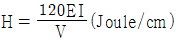
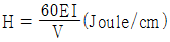
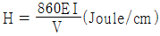
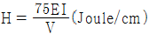
(정답률: 89%)
88. 용접 이음의 장,단점 설명 중 틀린 것은?
- 단점 : 용접부 재질이 변화한다.
- 단점 : 수축변형 및 잔류 응력이 발생한다.
- 장점 : 기밀, 수밀이 우수하다.
- 장점 : 저온에서 용접부의 취성 파괴 위험이 없다.
(정답률: 93%)
89. 일반적으로 모재의 두께가 1mm이상일 때 가스 용접시 용접봉의 지름 D(mm), 모재의 두께 T(mm) 일 때, 옳은 관계식은?
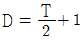
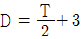
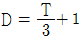
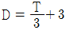
(정답률: 77%)
90. 산소병 운반 취급상의 주의점이 아닌 것은?
- 이동할 때는 산소밸브를 반드시 잠근다.
- 산소병을 뉘여서 운반한다.
- 밸브에 그리스, 기름을 묻혀서는 안 된다.
- 충격을 방지하여야 한다.
(정답률: 91%)
91. 미그(MIG) 용접의 장범에 해당하지 않는 것은?
- 바람의 영향을 안 받으므로 방풍대책이 필요 없다.
- 각종 금속의 용접이 가능하다.
- 수동 피복 아크 용접에 비해 용착 효율이 높아 고능률적이다.
- CO2 용접에 비해 스패터 발생이 적다.
(정답률: 84%)
92. 대기 중에 탄산가스 농도가 몇 % 이상이면 극히 위험한 상태(치사량)가 되는가?
- 3%
- 5%
- 15%
- 30%
(정답률: 알수없음)
93. 정격 2차 전류 200[A], 정격사용률 40%의 아크 용접기로 150[A]의 용접전류를 사용하여 용접하는 경우의 허용 사용률(η)은 몇 %정도인가?
- 약 71%
- 약 75%
- 약 80%
- 약 85%
(정답률: 50%)
94. 용접기의 사용율(DUTY CYCLE)은 다음 어느 식으로 나타내는가?
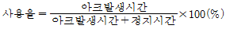
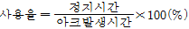
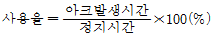
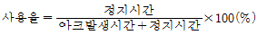
(정답률: 87%)
95. 용접작업에 있어서 일어나는 재해가 아닌 것은?
- 유해 광선 장해
- 화상
- 매연(fume)에 의한 장해
- 전기 방사선 장해
(정답률: 94%)
96. 아크용접에서 피복제의 성분 중 슬랙(slag) 생성제는?
- 당밀
- 망간
- 이산화망간
- 니켈
(정답률: 82%)
97. 교류 아크 용접기의 직류 아크 용접기의 비교 설명으로 틀린 것은?
- 교류 아크 용접기의 무부하 전압은 직류아크 용접기의 무부하 전압보다 크다.
- 교류 아크 용접기의 역률은 직류 아크 용접기의 역률보다 양호하다.
- 직류 아크 용접기의 전격 위험은 교류 아크 용접기의 전격위험보다 적다.
- 직류 아크 용접기의 자기 쏠림은 교류 아크 용접기의 자기 쏠림보다 많다.
(정답률: 72%)
98. 플래시 용접의 3단계는?
- 예열, 플래시, 업셋
- 플래시, 예열, 검사
- 플래시, 업셋, 후열
- 예열, 플래시, 후열
(정답률: 84%)
99. 용접시 안전과 관련된 설명 중 틀린 것은?
- 아크빛은 전광성 안염의 요인이 되므로 성능이 좋은 차광렌즈를 사용한 보호구를 반드시 착용하여야 한다.
- 전가 beam 용접시에는 X-선 등의 방사선 누출에 각별히 주의하여야 한다.
- 수동아크 용접봉 홀더는 비교적 낮은 전압이 들어오므로 절연이 다소 나쁘더라도 전격사고의 위험이 없다.
- 용접작업 근처에는 도료, 인화성 물질이 있어서는 안된다.
(정답률: 88%)
100. 서브머지드 아크용접의 특징이 아닌 것은?
- 용집이 깊으므로 용접홈을 적게할 수 있다.
- 용접이음의 신뢰성이 높다.
- 와이어에 대전류를 흘려 줄 수 있다.
- 전자세 용접에 주로 사용 된다.
(정답률: 87%)